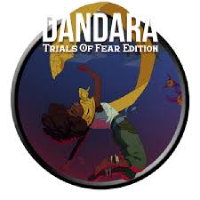
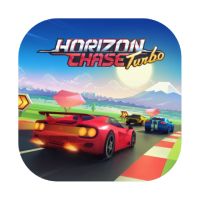

Os melhores jogos no brasil
- Dandara
- Horizon Chase Turbo
- No Place for Bravery

- Dandara
- Um jogo de ação e aventura 2D com mecânicas de plataforma únicas e uma estética inspirada na cultura brasileira, segundo a Terra e o Reddit.
- Horizon Chase Turbo
- Um jogo de corrida arcade que homenageia os clássicos da década de 1980, elogiado pela Terra e pelo Jovem Nerd.
- No Place for Bravery
- Um jogo de ação e aventura sombrio e desafiador que recebeu destaque em 2022.
Sobre os melhores jogos da EUA
CLIQUE AQUI PARA SABER MAIS